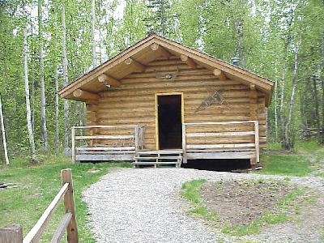
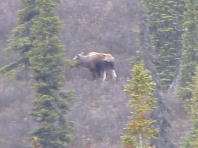
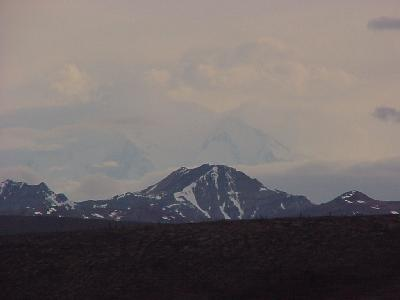

June 1, 5196 miles
| We started the day checking out of the the MicroTel that had been our home now for three nights. Our goal for the day, a little sight seeing and driving to the Denali area for tomorrow. Unluckily, it rained on and off most of the day, clearing up only as we approached Denali. | |
| During our drive north we did manage to stop by a few sites, including the Iditarod Headquarters. They have an interesting display and program. The cabin shown is similar to those used at the check points, and to many others in the back-country that the BLM maintains for short term use. |  |
| We also toured the Ranger Station at Talkeetna; this
is the starting point for the 1000+ Mt. McKinley climbers,
and visited with Mary Cary, an author and cook of fern
tops. We sampled a few of her recipes for fern tops and
found them very good. Another moose. |
 |
| Upon arriving at Denali, we did think we caught a glimpse of Mt McKinley through the clouds. What do you think? Mt McKinley would be behind, and above the obvious mountain in the center of the frame. |  |
| We pulled into the Denali area, at 10:00
after traveling 309 miles and eating dinner. Wildlife for the day included: moose (1); elk (1); and porcupine (1). Tomorrow will be a sight seeing day, with a bus trip through Denali Park. Since the early 70's driving personal cars through the park has been restricted, so it is either hike or ride. The bad part is the 4:30AM wake-up call. |
|